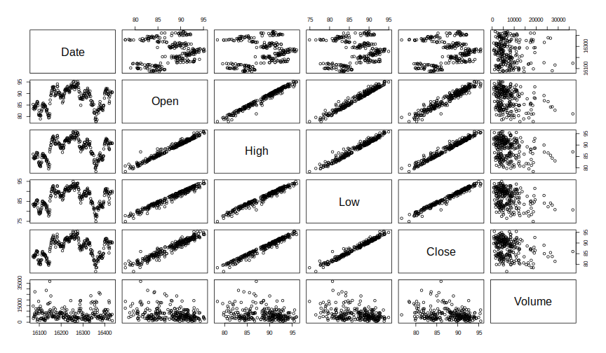
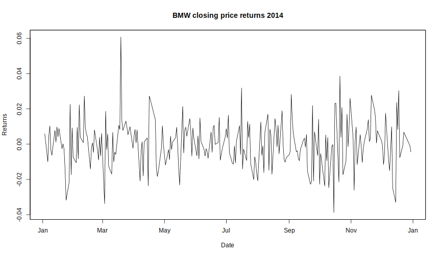

Downloading Data from Quandl Databases
The workhorse is the Quandl() function.
Quandl(code, type = c("raw", "ts", "zoo", "xts", "timeSeries"), start_date,
end_date, transformation = c("", "diff", "rdiff", "normalize", "cumul",
"rdiff_from"), collapse = c("", "daily", "weekly", "monthly", "quarterly",
"annual"), sort = c("desc", "asc"), meta = FALSE,
authcode = Quandl.auth(), ...)
You can start downloading data by only using the code argument.
Codes can be found on the website of Quandl
or you can query the databases directly within R. (see chapter 1.4).
Suppose we want the data for the automobile manufacturer BMW from Frankfurt Stock Exchange
using Google Finance as database.
bmw <- Quandl("GOOG/FRA_BMW")
str(bmw)
## 'data.frame': 1193 obs. of 6 variables:
## $ Date : Date, format: "2015-09-14" "2015-09-11" ...
## $ Open : num 86 86.4 85 86.7 81.3 ...
## $ High : num 86.2 86.4 87 88.2 84.9 ...
## $ Low : num 85 85.1 84.6 85.4 81.2 ...
## $ Close : num 85.5 86.1 86.5 85.4 84.2 ...
## $ Volume: num 1897 4836 9095 11818 5177 ...
## - attr(*, "freq")= chr "daily"
head(bmw)
## Date Open High Low Close Volume
## 1 2015-09-14 86.00 86.24 84.98 85.55 1897
## 2 2015-09-11 86.40 86.40 85.10 86.07 4836
## 3 2015-09-10 85.05 87.00 84.60 86.48 9095
## 4 2015-09-09 86.70 88.23 85.38 85.38 11818
## 5 2015-09-08 81.30 84.87 81.20 84.25 5177
## 6 2015-09-07 81.10 81.40 80.66 80.74 3323
tail(bmw)
## Date Open High Low Close Volume
## 1188 2011-01-10 58.90 59.26 58.43 58.56 13532
## 1189 2011-01-07 59.55 60.07 58.83 59.47 15508
## 1190 2011-01-06 60.00 61.02 59.70 59.83 8911
## 1191 2011-01-05 60.40 60.55 58.42 60.06 21851
## 1192 2011-01-04 61.44 61.57 60.09 60.77 30843
## 1193 2011-01-03 59.70 61.54 59.70 61.31 19869
summary(bmw)
## Date Open High Low
## Min. :2011-01-03 Min. : 0.00 Min. : 46.64 Min. : 43.56
## 1st Qu.:2012-02-28 1st Qu.: 61.19 1st Qu.: 61.78 1st Qu.: 60.50
## Median :2013-05-06 Median : 72.04 Median : 72.63 Median : 71.30
## Mean :2013-05-04 Mean : 75.42 Mean : 76.29 Mean : 74.54
## 3rd Qu.:2014-07-09 3rd Qu.: 87.61 3rd Qu.: 88.41 3rd Qu.: 86.16
## Max. :2015-09-14 Max. :122.89 Max. :123.70 Max. :120.22
## NA's :2 NA's :2 NA's :2
## Close Volume
## Min. : 44.94 Min. : 0
## 1st Qu.: 61.28 1st Qu.: 5723
## Median : 71.97 Median : 9479
## Mean : 75.44 Mean : 12352
## 3rd Qu.: 87.27 3rd Qu.: 15211
## Max. :123.00 Max. :185389
##
Using additional arguments of Quandl() function
The function call Quandl("GOOG/FRA_BMW") without any additional arguments returns a data frame
with six columns, namely 'Date', 'Open', 'High', 'Low', 'Close' and 'Volume' for
all available dates. Furthermore, the data frame is returned in descending order.
Our R object bmw ranges from 2011-01-03 to 2015-09-14.
If you want to truncate your time series the two arguments start_date and end_date
of the Quandl function can be used.
In a next step, we only want to download the BMW data for 2014 and we want the ordering
of the data to change from descending to ascending.
Both arguments start_date and end_date have to be in the format 'yyyy-mm-dd'.
bmw_2014 <- Quandl("GOOG/FRA_BMW", start_date = "2014-01-01", end_date = "2014-12-31",
sort = "asc")
str(bmw_2014)
## 'data.frame': 252 obs. of 6 variables:
## $ Date : Date, format: "2014-01-02" "2014-01-03" ...
## $ Open : num 85.3 83.5 84 83.1 83.9 ...
## $ High : num 86 84.4 84.3 84 84.6 ...
## $ Low : num 83.5 83.5 82.9 82.5 83.8 ...
## $ Close : num 83.5 84 83.2 83.6 84.5 ...
## $ Volume: num 14509 3476 4932 5129 6477 ...
## - attr(*, "freq")= chr "daily"
head(bmw_2014)
## Date Open High Low Close Volume
## 1 2014-01-02 85.28 86.01 83.50 83.54 14509
## 2 2014-01-03 83.50 84.40 83.50 84.03 3476
## 3 2014-01-06 84.05 84.33 82.86 83.19 4932
## 4 2014-01-07 83.10 84.01 82.47 83.60 5129
## 5 2014-01-08 83.90 84.64 83.83 84.46 6477
## 6 2014-01-09 84.55 85.11 83.72 84.18 7907
Comparing both R objects bmw and bmw_2014 we have reduced the observations for each
of the columns from 1193 to 252.
The dates we have data for range from 2014-01-02 to 2014-12-30.
By default, Quandl() returns data as class data.frame which is not the best
output type when dealing with time series.
Quandl() offers several different output classes,
- data.frame
- ts
- zoo
- xts
- timeSeries,
which can be chosen with type argument.
An overview about the different classes and corresponding packages can be found in the CRAN Task View: Time Series Analysis or in the pdf Working with Financial Time Series Data in R written by Eric Zivot.
To get an output with class zoo the function call would look like this:
bmw_2014_zoo <- Quandl("GOOG/FRA_BMW", start_date = "2014-01-01", end_date = "2014-12-31",
sort = "asc", type = "zoo")
Let's have a look at what the standard plot function produces for both classes.
plot(bmw_2014)

plot(bmw_2014_zoo)

First call produces a scatterplot matrix whereas the columns of the data frame are plotted against each other. Second call returns plotted time series for each column which is more appropriate for our data.
The reason for this behavior is that 'plot' function checks the classes of the objects to be visualized.
So under the hood for an object with class 'data.frame' the function 'plot.data.frame' from package graphics is used
and for objects with class 'zoo' the 'plot.zoo' function in package zoo.
Now we have data on a daily basis but Quandl() offers several more choices like,
- weekly
- monthly
- quarterly
- annual,
which can be achived using the collapse argument.
By collapsing a daily dataset to weekly,
you will get a sample of the original dataset where the observation for each week
is the last data point available for that week.
To download weekly data of 2014 for BMW equity from Frankfurt Stock Exchange the function call would be
bmw_2014_zoo_weekly <- Quandl("GOOG/FRA_BMW",
start_date = "2014-01-01", end_date = "2014-12-31",
sort = "asc", type = "zoo", collapse = "weekly")
str(bmw_2014_zoo_weekly)
## 'zoo' series from 2014-01-05 to 2015-01-04
## Data: num [1:53, 1:5] 83.5 84.3 85.6 84.7 80.6 ...
## - attr(*, "dimnames")=List of 2
## ..$ : NULL
## ..$ : chr [1:5] "Open" "High" "Low" "Close" ...
## Index: Date[1:53], format: "2014-01-05" "2014-01-12" "2014-01-19" "2014-01-26" ...
head(bmw_2014_zoo_weekly)
## Open High Low Close Volume
## 2014-01-05 83.50 84.40 83.50 84.03 3476
## 2014-01-12 84.26 84.26 83.14 83.65 27281
## 2014-01-19 85.57 86.73 85.56 86.34 8630
## 2014-01-26 84.72 84.75 81.69 81.97 12149
## 2014-02-02 80.62 80.98 78.66 80.72 9208
## 2014-02-09 82.15 82.15 81.08 82.07 3565
It is also possible to apply various transformations to the data.
Suppose we have a time series with time stamps $i = 0, \ldots, I$,
where $x_0$ refers to the starting date for the API call specified by start_date
and $x_I$ refers to the end point specified by end_date.
Possible values for the transform argument are
- none: leave the data as it is
diff: shows the row - on - row change;
rdiff: shows the relative row - on - row change;
normalize: set starting value at 100;
cumul: shows the cumulative sum;
rdiff_from: shows ratio between the latest point and an earlier point;
Furthermore, you can select single columns of the data. If we want the returns of the closing prices (fourth column) of 2014 for BMW we have to call the Quandl function like this
bmw_2014_returns_closing <- Quandl("GOOG/FRA_BMW.4",
start_date = "2014-01-01", end_date = "2014-12-31",
sort = "asc", type = "zoo", transform = "rdiff")
plot(bmw_2014_returns_closing, main = "BMW closing price returns 2014",
ylab = "Returns", xlab = "Date")

summary(bmw_2014_returns_closing)
## Index bmw_2014_returns_closing
## Min. :2014-01-03 Min. :-0.0387704
## 1st Qu.:2014-04-01 1st Qu.:-0.0078668
## Median :2014-07-02 Median : 0.0006620
## Mean :2014-07-01 Mean : 0.0003888
## 3rd Qu.:2014-09-27 3rd Qu.: 0.0084222
## Max. :2014-12-30 Max. : 0.0606808
Finally, you can also get meta data.
The only thing needed to receive this information is to switch the meta argument
from FALSE to TRUE.
bmw_2014_zoo_meta <- Quandl("GOOG/FRA_BMW", start_date = "2014-01-01", end_date = "2014-12-31",
sort = "asc", type = "zoo", meta = TRUE)
str(bmw_2014_zoo_meta, "meta")
## 'zoo' series from 2014-01-02 to 2014-12-30
## Data: num [1:252, 1:5] 85.3 83.5 84 83.1 83.9 ...
## - attr(*, "dimnames")=List of 2
## ..$ : NULL
## ..$ : chr [1:5] "Open" "High" "Low" "Close" ...
## - attr(*, "meta")=List of 9
## ..$ frequency : chr "daily"
## ..$ name : chr "Bayerische Motoren Werke AG (BMW)"
## ..$ description : chr "Bayerische Motoren Werke AG is a German holding company and automobile manufacturer that focuses on the automobile and motorcyc"| __truncated__
## ..$ updated : chr "2015-09-14T20:59:41.739Z"
## ..$ source_code : chr "GOOG"
## ..$ code : chr "GOOG/FRA_BMW"
## ..$ source_name : chr "Google Finance"
## ..$ source_link : chr "www.google.com"
## ..$ source_description: chr "This data is NOT sourced directly from Google. It is however verified against their numbers.\r\n\r\nwww.quandl.com/WIKI is a b"| __truncated__
## Index: Date[1:252], format: "2014-01-02" "2014-01-03" "2014-01-06" "2014-01-07" ...
The meta attribute of the object bmw_2014_zoo_meta is a list with 9 entries, such as frequency, name, description and so on.
Assuming that we are interested in an extended description of BMW we can get this with
attr(bmw_2014_zoo_meta,"meta")$description
## Bayerische Motoren Werke AG is a German holding company and automobile manufacturer that
## focuses on the automobile and motorcycle markets. It divides its activities into the
## three main segments: Automobiles, Motorcycles and Financial Services.
## It owns three brands: BMW, MINI and Rolls-Royce. Its BMW automobile range
## encompasses the 1 Series, including three-door, five-door, coupe and convertible models;
## the 3 Series, including sedan, touring, coupe and convertible models;
## the 5 Series, available in sedan and touring models;
## the 6 Series, available as a coupe or convertible;
## the 7 Series large sedan; the Z4 roadster and coupe;
## the sports utility vehicles, X3, X5 and X6 and M models, such as M3, M5 and M6.
## It also offers cars under the MINI brand and motorcycles under the BMW brand.
## The Rolls-Royce brand offers three luxury cars, Phantom, Coupe and Ghost.
## It has producing, assembly, service and sales subsidiaries throughout the world.
## In January 2013, it sold its Husqvarna brand.